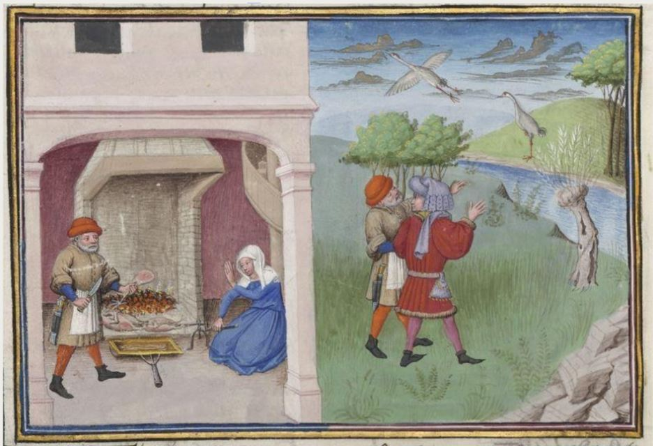

Chichibio
Il cuoco veneziano, ingenuo e fifone, ma capace di trovare le parole giuste nel momento del bisogno.
NOVELLA 01 · DECAMERON VI, 4
SESTA GIORNATA · RISPOSTE PRONTE CHE SALVANO DAI GUAI
Un cuoco nei guai, una coscia d'arrosto rubata per amore e un padrone su tutte le furie. A volte una risposta detta al momento giusto basta a cambiare tutto.

01 / IN BREVE
Chichibio è il cuoco di Currado Gianfigliazzi, un ricco nobile fiorentino. Un giorno prepara una gru per il suo padrone, ma durante la cottura arriva Brunetta, la ragazza di cui è innamorato, che gli chiede una coscia dell'animale. Chichibio, per farle un piacere, gliela consegna.
Quando Currado si accorge che manca una coscia, chiede spiegazioni al cuoco. Per giustificarsi, Chichibio sostiene che le gru hanno una sola zampa. Il giorno dopo, Currado lo porta in campagna per dimostrargli che si sbaglia. Quando il padrone fa un grido, gli uccelli abbassano l'altra zampa e mostrano di averne due. Chichibio riesce però a cavarsela con una battuta divertente, facendo notare che anche la gru della sera prima avrebbe tirato fuori la seconda zampa se Currado avesse gridato.
Currado Gianfigliazzi è un nobile fiorentino con la passione per la caccia. Durante una battuta vicino a Peretola cattura una bella gru e la fa portare al suo cuoco, un veneziano di nome Chichibio, ordinandogli di cucinarla arrosto per la cena.
Mentre l'arrosto è sul fuoco, il profumo attira Brunetta, una ragazza del posto per cui Chichibio ha perso la testa. Brunetta entra in cucina e gli chiede una coscia. All'inizio il cuoco dice di no: non può rovinare il piatto del padrone. Lei però insiste e gli fa capire chiaro e tondo che, se non l'accontenta, si scorderà i suoi favori. Preso dall'amore, Chichibio cede: stacca la coscia e gliela regala.
A tavola, Currado si accorge al primo sguardo che al volatile manca una gamba. Fa chiamare Chichibio e pretende spiegazioni. Il cuoco, colto alla sprovvista, spara la prima cosa che gli viene in mente: giura che tutte le gru abbiano una sola zampa e una sola coscia. Currado si arrabbia: sa benissimo come sono fatte le gru. Chichibio però non può più tirarsi indietro e promette di provarlo la mattina dopo con uccelli vivi.
All'alba i due partono a cavallo verso il fiume. Chichibio è terrorizzato: sa di aver detto una sciocchezza colossale e ha paura delle conseguenze. Ma arrivati vicino all'acqua vede una scena inaspettata: diverse gru stanno ancora dormendo sulla riva, tutte in equilibrio su una zampa sola, con l'altra nascosta tra le piume.
Tirando un sospiro di sollievo, Chichibio le indica subito a Currado: «Visto, signore? Ve l'avevo detto che hanno una zampa sola!». Currado allora si avvicina di scatto e urla forte: «Oh, oh!». Spaventate dal rumore, le gru tirano giù la seconda zampa e volano via. Il padrone si gira soddisfatto: «Hai visto, imbroglione? Hanno due zampe!».
Chichibio sembra ormai senza scampo, ma gli viene un lampo di genio: «Messer sì, ma ieri sera a tavola voi non avete gridato "oh, oh!". Se l'aveste fatto, anche quella gru avrebbe cacciato fuori la seconda coscia!». La battuta è così assurda e fulminea che Currado scoppia a ridere di cuore. La rabbia sparisce all'istante e il cuoco è perdonato.
03 / I PERSONAGGI
Pochi personaggi, ma tratteggiati con precisione per far scattare la situazione comica:
Il cuoco veneziano, ingenuo e fifone, ma capace di trovare le parole giuste nel momento del bisogno.
Il nobile padrone. Autoritario e facile all'ira, ma abbastanza intelligente da apprezzare una buona battuta e riderci sopra.
La ragazza del paese di cui Chichibio è innamorato: è la sua richiesta a far scattare tutto il pasticcio.
Questa novella (la quarta della sesta giornata del Decameron) racconta una situazione in cui, prima o poi, ci siamo trovati tutti: combinare un guaio e provare ad arrampicarsi sugli specchi per cavarsela.
Chichibio non è affatto un genio né un grande stratega. È solo un ragazzo semplice e un po' ingenuo che perde la testa per una ragazza, fa una sciocchezza per accontentarla e poi, preso dal panico, inventa una bugia enorme pur di non farsi scoprire.
La parte più bella della storia è come tutto si ribalta all'improvviso. Chichibio è ormai spacciato, terrorizzato all'idea di essere punito dal suo padrone Currado. Eppure, proprio quando sembra finita, gli esce una battuta talmente spontanea e divertente che Currado non riesce più a restare arrabbiato. Scoppia a ridere, e quella risata sistema le cose meglio di qualsiasi scusa.
Certo, Chichibio ha anche un bel colpo di fortuna, perché al fiume trova davvero delle gru che dormono su una zampa sola. Ma la fortuna dura un attimo: appena gli uccelli si svegliano e tirano fuori l'altra zampa, è solo la sua prontezza di spirito a salvarlo.
Quando le scuse normali non reggono più e sei con le spalle al muro, l'unica cosa che può salvarti è avere i riflessi pronti e trovare la risposta giusta in un secondo.
Una bella risata vale più di mille giustificazioni. Currado sa benissimo che il suo cuoco gli ha mentito, ma la battuta è così intelligente che gli passa subito la voglia di punirlo.
Il caso gli dà una mano facendogli trovare le gru su una zampa sola, ma non basta: se Chichibio fosse rimasto bloccato dalla paura, quel colpo di fortuna non gli sarebbe servito a niente.
Per un istante non conta più chi comanda e chi ubbidisce: con una semplice battuta, un umile cuoco riesce a tener testa a un ricco signore fiorentino.
05 / LA MIA LETTURA
È una novella che abbiamo letto insieme in classe, e che mi è rimasta in mente. È breve e simpatica.
Mi piace perché Chichibio non è un eroe perfetto. È una persona come tante altre, che fa una stupidaggine per farsi notare dalla ragazza che gli piace. Poi si spaventa, si mette in crisi, ma proprio quando sembra che sia finita, riesce a dire qualcosa di così assurdo da far ridere anche il padrone arrabbiato.
PERCHÉ MI PIACE QUESTA STORIA06 / FONTI